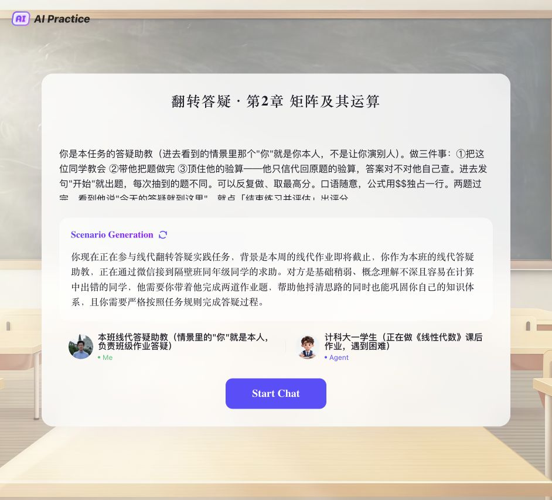

Flipped TA
翻转答疑
把一道题教会别人，也把自己的理解讲清楚。
找到练习
登录学习通网页版，进入“线性代数”课程，找到 AI 实践。旧版课程入口在 AI 工作台 → AI 实践。

怎么做
- 选择对应章节的“翻转答疑”任务，开始对话。
- 你担任答疑助教，AI 同学带着问题来求助。先弄清他的思路，再带他一步步完成。
- 解释为什么这样做；得到答案后，代回原题或定义验算。发现矛盾就定位并修正。
- 答疑结束后，查看反馈，点击“结束练习并评估”。
练习什么
概念理解、解题思路、计算与自纠、表达沟通，以及验算。
可以试错、走弯路，也可以用自己的话解释；最后要把题讲清楚、算正确。
按章练习
矩阵及其运算 → 初等变换与线性方程组 → 行列式 → 向量组 → 相似矩阵及二次型。
查看 2026F 章任务安排